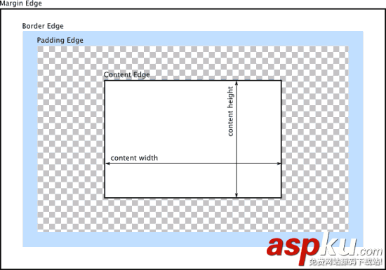
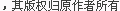

CSS中的元素定位方法详解
时间:2015-07-23来源:www.aspku.com 作者:源码库 文章热度:
104
℃
这篇文章主要介绍了CSS中的元素定位方法详解,是CSS入门学习中的基础知识,需要的朋友可以参考下
1.盒模型
盒模型，就是 浏览器为页面中的每个 HTML 元素生成的矩形盒子。
这些盒子们都要按照 可见版式模型（visual formatting model）在页面上排布。可见的页面版式主要由三个属性控制： position 属性、 display 属性和 float 属性。其中，position 属性控制页面上元素间的位置关系， display 属性控制元素是堆叠、并排，还是根本不在页面上出现， float 属性提供控制的方式，以便把元素组成成多栏布局。

盒子属性分三组：
边框（border）。可以设置边框的宽窄、样式和颜色。
内边距（padding）。可以设置盒子内容区与边框的间距。
外边距（margin）。可以设置盒子与相邻元素的间距。
可以这么理解盒子属性：外边距是边框向 外推 其他元素，而内边距是从边框向 内推 元素的内容。
CSS 为边框、内边距和外边距分别规定了简写属性。在每个简写声明中，属性值的顺序都是上、右、下、左（顺时针旋转）。
示例：margin:5px 10px 12px 8px;
注意：4 个值之间有空格，但不能是其他分隔符（比如逗号之类的）。甚至，你都不用把 4 值
全都写出来——如果哪个值没有写，那就使用对边的值。
示例：margin:12px 10px 6px;
说明：缺少最后一个值（左边），使用对边（右边）的值（10px），即：margin:12px 10px 6px 10px。
示例：margin:12px 10px;
说明：缺少最后两个值（下边和左边），使用上边（12px）和右边（10px），即：margin:12px 10px 12px 10px;
示例：margin:12px;
说明：只写一个值，那么4个边都去这个值。即：margin:12px 12px 12px 12px;
1.1 盒子边框
边框（border）有3个相关属性：
宽度
可以使用 thin、medium 和 thick 等文本值，也可以使用
除百分比和负值之外的任何绝对值。
样式
有 none、hidden、 dotted、 dashed、 solid、 double、 groove、
ridge、 inset 和 outset 等文本值。
颜色
可以使用任意颜色值，包括 RGB、 HSL、十六进制颜色 值和颜色关键字。
1.2 盒子内边距
内边距（padding）用来设置盒子内容区与边框的间距。在没有设定内边距的情况下，内容会紧挨着边框。
1.3 盒子外边距
外边距（margin）用来设置盒子与相邻元素的间距。
推荐使用这条规则作为样式表的第一条规则：* {margin:0; padding:0;}
说明：这条规则把所有元素默认的外边距和内边距都设定为零。把这条规则放到样式表里后，所有默认的外边距和内边距都会消失。然后，你可以为那些真正需要外边距的元素再添加外边距。不同浏览器默认的内边距和外边距也不一样，特别是对表单和列表等复合元素。在这种情况下，用这条规则 中和 默认值，然后再根据需要添加，则会在各浏览器上获得一致的效果。
1.4 叠加外边距
垂直方向上的外边距会叠加，这可是你必须得知道的一件事。
In CSS, the adjoining margins of two or more boxes (which might or might not be siblings) can combine to form a single margin. Margins that combine this way are said to collapse, and the resulting combined margin is called a collapsed margin.
在CSS中，两个或多个毗邻（父子元素或兄弟元素）的普通流中的块元素垂直方向上的 margin 会发生叠加。这种方式形成的外边距即可称为外边距叠加（collapsed margin）。
1.5 外边距的单位
根据经验，为文本元素设置外边距时通常需要混合使用不同的单位。比如说，一个段落的左、右外边距可以使用像素，以便该段文本始终与包含元素边界保持固定间距，不受字号变大或变小的影响。而对于上、下外边距，以 em 为单位则可以让段间距随字号变化而相应增大或缩小。
示例：
2.浮动与清除
浮动和清除是用来组织页面布局的一柄利剑，这柄剑的剑刃就是 float 和 clear 属性。
2.1 浮动
浮动，可以想象把元素从常规文档流中拿出来。浮动元素脱离了常规文档流之后，原来紧跟其后的元素就会在空间允许的情况下，向上提升到与浮动元素平起平坐。
如果浮动元素后面有两个段落，而你只想让第一段与浮动元素并列（就算旁边还能放第二段，也不想让它上来），可以使用 clear 属性来 清除 第二段，然后它就会乖乖地呆在浮动元素下面了。
浮动 最常见的作用：
实现传统出版物上那种文字绕排图片的效果
让原来上下堆叠的块级元素，变成左右并列，从而实现布局中的分栏。
2.2 围住浮动元素的三种方法
注意：三种方法各有利弊，看情况使用。
方法一：为父元素添加 overflow:hidden
方法二：同时浮动元素
方法三：添加非浮动的清除元素
3.定位
CSS 布局的核心是 position 属性，对元素盒子应用这个属性，可以相对于它在常规文档流中的位置重新定位。 position 属性有 4 个值： static、 relative、 absolute、fixed，默认值为 static。
3.1 静态定位
static
在静态定位的情况下，每个元素都处于常规文档流中。要突破这种布局元素的方式，就必须把盒子的 position 属性改为其它三个值。
3.2 相对定位
relative
相对定位，相对的是它原来在文档流中的位置（或者默认位置）。设置之后，可以使用 top、right、bottom 和 left 属性来改变它的位置。多数情况下，只用 top 和 left 就可以实现我们想要的效果。
使用相对定位的关键就是要考虑到元素原来的空间。因为使用了相对定位的元素只是相对于原始位置挪动了一下，页面没有任何变化，即元素原来占据的空间没有动，其他元素也没动。
3.3 绝对定位
absolute
绝对定位会把元素彻底从文档流中拿出来，然后相对于其他元素（默认是定位上下文 body）定位。同样可以通过 top 和 left 设定偏移值来决定位置。
3.4 固定定位
fixed
从完全移出文档流的角度说，固定定位与绝对定位类似。但不同之处在于，固定定位元素的定位上下文是视口（浏览器窗口或手持设备的屏幕），因此它不会随页面滚动而移动。
提示：固定定位并不常用，最常见的情况是用它创建不随页面滚动而移动的导航元素。
3.5 定位上下文
定位上下文，指的是定位元素所相对偏移的元素。
事实上，只要把元素的外边距和内边距设定好，多数情况下只用静态定位就足以实现页面布局了。很多刚开始接触 CSS 的初学者都会错误地设定 position 属性，最终才发现从文档流中挪出来的这些元素一点也不好控制。因此，除非真需要那么做，否则 不要轻易修改元素默认的 position 属性。
4.显示属性
所有元素都有 position 属性，也有 display 属性。
display属性有三个值：block、inline 和 none。
块级元素，比如段落，标题，列表等，在浏览器上下堆叠显示。
行内元素，比如a、span、img，在浏览器中左右并排显示，只有前一行没有空间时才会显示到下一行。
把块级元素变成行内元素（或者相反）：
把元素的 display 设置为 none，则该元素及所有包含在其中的元素，都不会在页面显示，它们原先占据的空间也不会被回收，就好像相关标记根本不存在一样。
与此相对的元素是 visibility 属性，属性值为：visible（默认值）和 hidden。如果设置为 hidden，元素会被隐藏，但其占据的页面空间会被保留。
下一篇：举例详解CSS中的字体尺寸设置
相关CSS教程：
相关资源下载：
- 相关链接：
- 模板说明：
CSS教程-CSS中的元素定位方法详解。